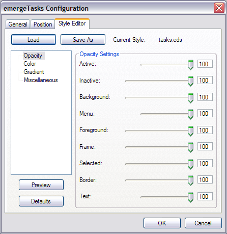
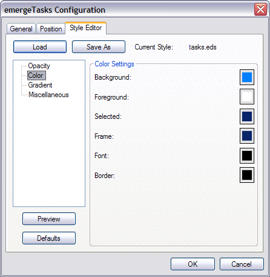
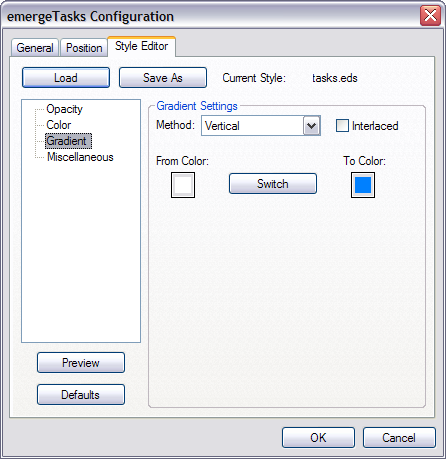

| About |
The Style Editor sets the opacity, color, and different visual effects of most elements in each emerge Desktop applet window.
The data is kept in text files (editable with Notepad) with the extension .eds (short for emerge desktop style), which are located in the User Profile folder under "\Application Data\Emerge Desktop\themes" (see also Directory Structure).
| Configuration |
The Style Editor is located in each applet's configuration dialog box, which is opened by pressing the Ctrl key and right-clicking on the applet window, and then clicking on Configure:
The Style Editor is located on one of the tabs:

Opacity Settings (0 is transparent and 100 opaque, default of all settings is 100):
Active: 20-100 - Sets the opacity of the applet when it has focus.
Inactive: 0-100 - Sets the opacity of the applet when it does not have focus.
Background: 0-100 - Sets the opacity of the applet's background.
Menu: 20-100 - Sets the opacity of the menu.
Foreground: 0-100 - Sets the opacity of the foreground windows (the miniatures in VWM).
Frame: 0-100 - Sets the opacity of the VWM frame.
Selected: 0-100 - Sets the opacity of the square indicating the active desktop in the VWM and of the highlight border of the active task in emergeTasks.
Border: 0-100 - Sets the opacity of the applet's border.
Text: 20-100 - Sets the opacity of the emergeCommand text.

Color Settings (Default color of all settings is per Windows color scheme):
Background: Sets the color of the applet's background.
Foreground: Sets the color of the miniature windows in the VWM.
Selected: Sets the color of the VWM active window and the Highlight border of the active tasks.
Frame: Sets the color of the VWM window border.
Font: Sets the color of the text displayed in emergeCommand.
Border: Sets the color of the applet's border.
Note: Pressing the Shift key and left-clicking on any of the Color buttons resets the color to the Windows color scheme default.

Gradient Settings:
Method: Defines the direction or geometry of the gradient. Options are: Solid (uses color defined in Background), Vertical (from top to bottom), Horizontal (from left to right), CrossDiagonal (from top right corner to bottom left corner), Diagonal (from top left corner to bottom right corner), Pipecross (from corners to center drawing a 3D pipe cross), Elliptic (from border to center), Rectangle (from edges to center drawing the diagonals), Pyramid (from corners to center drawing a cross). Default is Solid.
Interlaced: Defines the gradient as alternate darker/lighter lines.
From Color: defines the starting color for the Gradient. Pressing the Shift key and left-clicking on the Color button sets the color to the Windows color scheme default.
To Color: Defines the ending color for the Gradient. Pressing the Shift key and left-clicking on the Color button sets the color to the Windows color scheme default.
The Switch button switches the From and To Colors.

Miscellaneous Settings:
Shadow: Sets the drop shadow on or off (Default is On)
Blur: On Vista and above, gives a blurred effect to the background of the applets (i.e. the "Glass" effect) when the Opacity Setting of the Background is less than 100. (Default is Off)
Padding: Sets the width of the area surrounding the icons. (Default is 0)
Bevel: Sets the width of the bevel surrounding the applets. (Default is 1)
Border: Sets the width of the border surrounding the applets. (Default is 1)
Bevel Type: Flat (default), Raised (center looks higher than borders, like a button), Sunken (center looks lower than borders, like a tray)
| Usage |
The user presses the Load key to open an other existing style. After modifying a Style, the user presses the Save As button to save the new settings under a new style name, and the OK button to close the dialog box. At any moment the user can press the Preview button to visualize the modifications. Pressing the Cancel button will close the Style Editor without saving any modifications. The Defaults button resets all settings to the default values defined by the Windows color style.